Jack
Jack（傅晓城）是北航头马的"老会员"，他的旅程几乎与俱乐部的成长同步。2014年春天，他还只是个在会议表上排在末尾、只领过一次计时员（Timer）角色的新人；当年5月，他在第61次会议上完成了破冰演讲CC1《Emergency Tips》，从此一发不可收拾——CC3《Get Rid of Video Game Addiction》、CC4《Unique》、CC5《Jack & Rose》、CC7《Why Is Technology Dangerous》、CC8《The Island of Smile》、CC9《Pyramid Selling Imitation》，一路把Competent Communicator的十篇稿子稳稳推进。
他是公认的"幽默担当"。会议预告里反复用"funny""humorous""handsome""romantic"来形容他，他的演讲总能把严肃话题讲得满场大笑。最有名的便是CC5《Jack & Rose》——"As we all know, Jack loves Rose"，可俱乐部里的Jack偏偏"get a lot of Roses"，于是"玫瑰先生""rose lover"成了他的标签，连后来的即兴演讲、情景剧都绕着这个梗转。除了备稿，他更是会议舞台上的常客：一次次担任即兴主持TTM、主持人Toastmaster，把动物世界、电影、毕业、相亲这些主题串得活色生香，也参加过2014秋季、2015春季的演讲比赛。
最动人的是他的"归来"。毕业工作后，2016年他难得回北京一次，却惦记着自己还差一篇没讲完的CC10，专程赶回俱乐部把它补完，当晚拿下最佳备稿演讲者——"头马老会员杰克回归……这种精神让人敬佩与感动"。此后他依旧没有走远：2018年底当选新一届会员副主席（VP Membership），2019年又站上语法官（Grammarian）的讲台示范角色，还在第234次会议以《Enjoy the moment》再夺最佳备稿演讲者。从计时员到officer，从破冰到归来，Jack用五年时间，把"坚持"两个字讲成了北航头马的一段佳话。
里程碑
- 2014-04 初登舞台·计时员 ↗在会员成长榜上以一次Timer角色亮相，正式开启头马旅程。
- 2014-05-30 破冰演讲 CC1《Emergency Tips》 ↗在第61次会议完成人生第一篇备稿演讲。
- 2015-03-20 CC5《Jack & Rose》成名作 ↗'玫瑰先生'人设由此诞生，成为俱乐部经典梗。
- 2016-06-05 归来补完 CC10·最佳备稿演讲者 ↗工作后专程回京讲完最后一篇CC10，赢得当晚最佳备稿演讲，感动全场。
- 2018-12-22 当选会员副主席 VP Membership ↗在官员选举会议中当选新一届服务团队会员副主席（傅晓城）。
- 2019-03-02 再夺最佳备稿演讲者 ↗在第234次会议以《Enjoy the Moment》获最佳备稿演讲者。
闯关之路 · Competent Communication
做过的演讲 · 10 场
担任过的会议角色
为俱乐部做的事
- 完整走完CC1-CC10演讲路径，是俱乐部坚持长情的标杆会员。
- 长期担任即兴主持TTM与会议主持TM，把多场主题会议办得幽默热闹。
- 2018年底当选会员副主席（VP Membership），进入俱乐部服务团队管理层。
- 2019年示范并担任语法官，帮助新会员理解角色职责。
- 毕业工作后仍专程返校讲完CC10，以行动诠释对头马的坚持，激励后辈。
- 多次代表俱乐部参加春/秋季演讲比赛。
照片墙 · 时间线
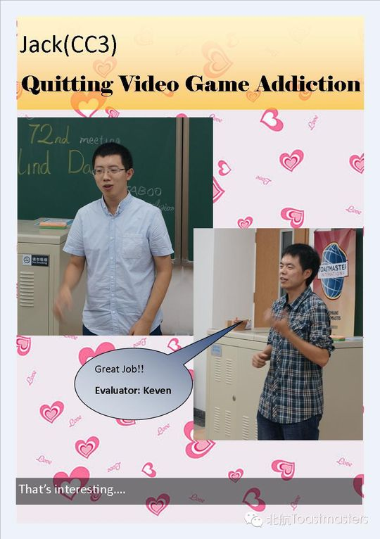
✓ ✓
✓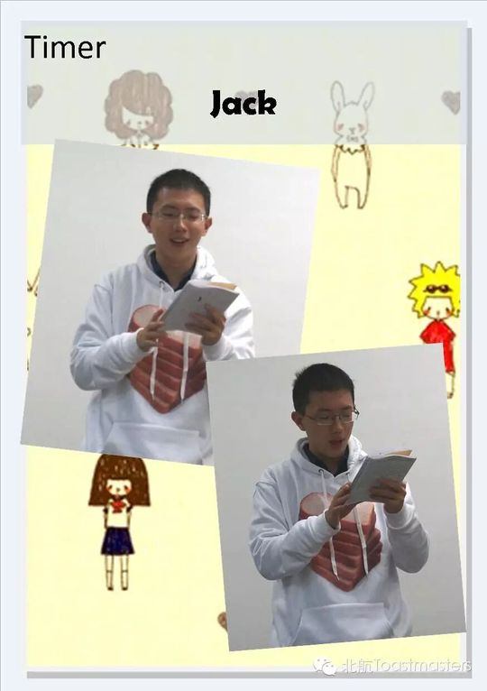
✓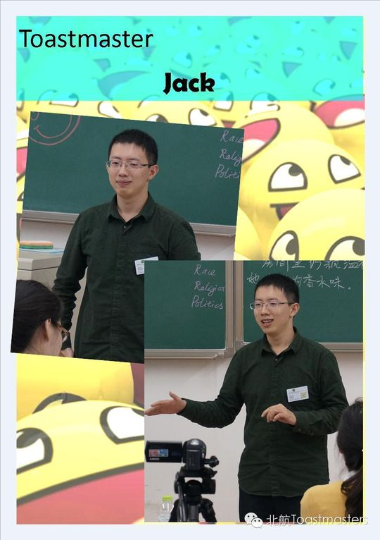
✓ ✓
✓ ✓
✓ ✓
✓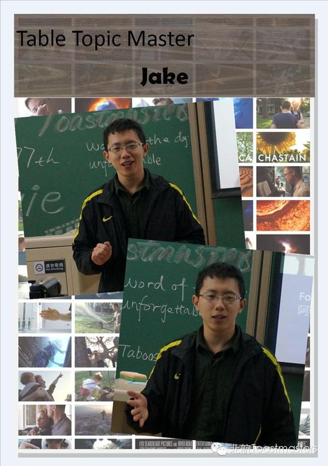
✓ ✓
✓ ✓
✓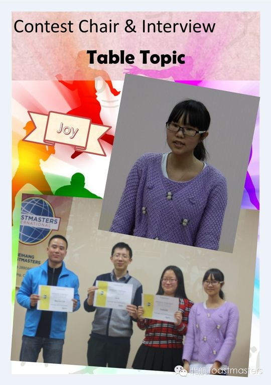
✓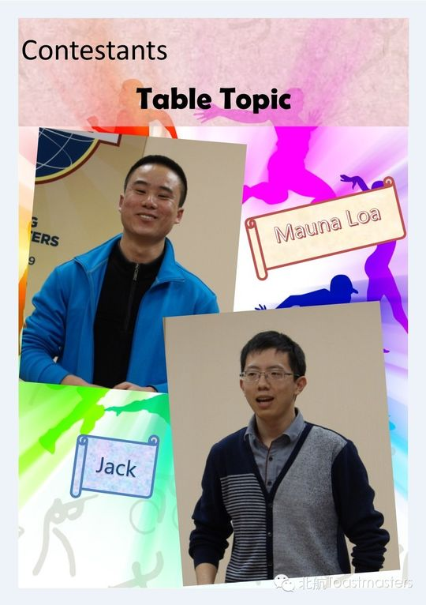
✓ ✓
✓ ✓
✓ ✓
✓ ✓
✓ ✓
✓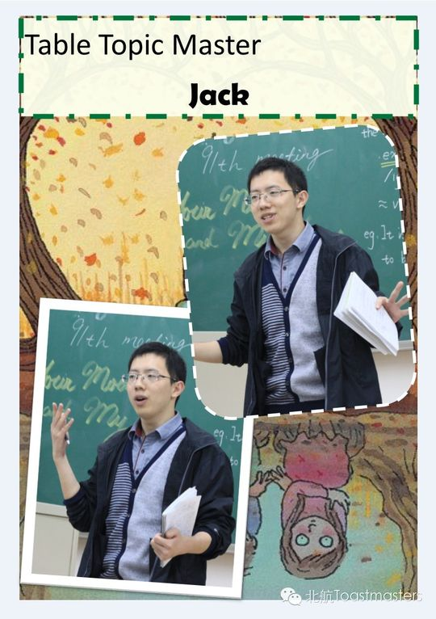
✓ ✓
✓ ✓
✓ ✓
✓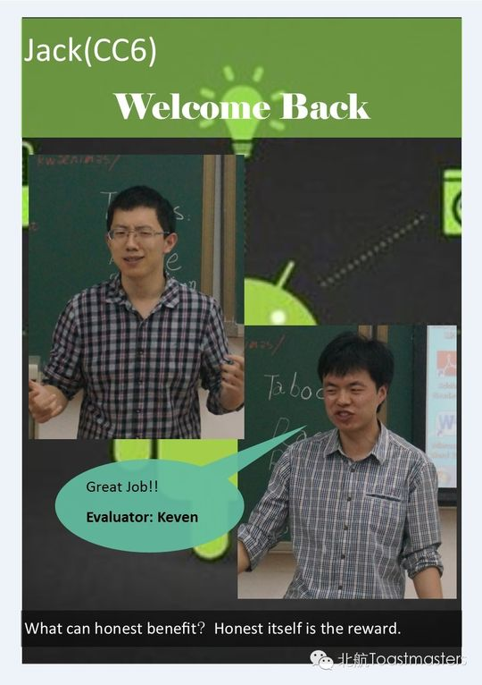
✓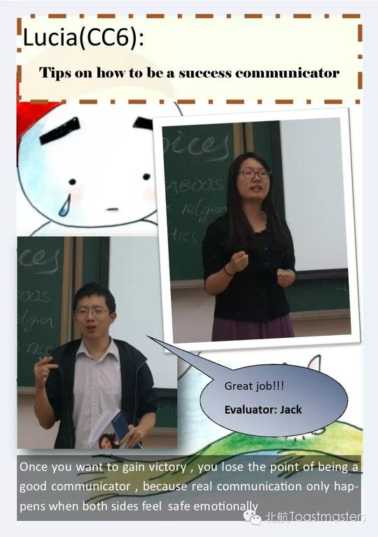
✓ ✓
✓ ✓
✓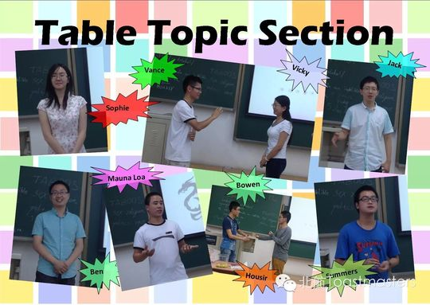
✓ ✓
✓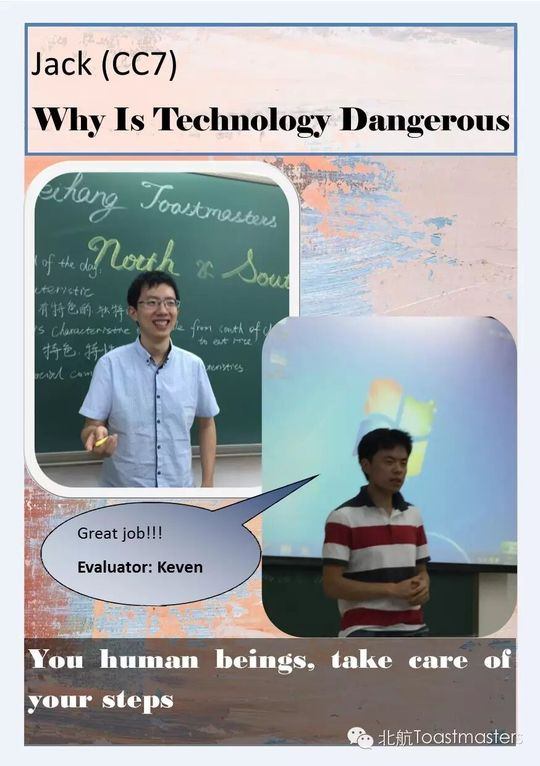
✓ ✓
✓ ✓
✓完整足迹 · 25 次出现（点开，每条可跳转原文）
- 2014-04-08成长统计:共担任1次角色Timer
- 2014-04-17第56次 · 担任即兴演讲主持
- 2014-05-30做CC1备稿演讲《Emergency Tips》
- 2014-06-05第62次 · 担任即兴演讲主持
- 2014-09-04参加英文幽默演讲比赛
- 2014-09-11第70次 · 担任即兴演讲主持
- 2014-09-25第71次 · 做CC3备稿演讲《Get Rid of Video Game Addiction》
- 2014-09-26第72次 · 做CC3备稿演讲《Get Rid of Video Game Addiction》
- 2014-10-16第74次 · 担任74次会议主持
- 2014-10-23第75次 · 演讲 Unique
- 2014-11-07第77次 · 担任桌话主持
- 2015-03-12第87次 · 参加春季比赛Table Topics
- 2015-03-20第88次 · 做备稿演讲Jack & Rose
- 2015-04-03第90次 · 担任第90次会议(Graduation)Toastmaster
- 2015-04-10第91次 · Your Moon & My Heart @BeihangTMC 91st Me
- 2015-04-23A sense of control
- 2015-07-02第102次 · North & South@Beihang TMC 102nd Meeting@
- 2015-08-21第107次 · Career Planning@Beihang TMC 107th Meetin
- 2015-09-25第112次 · Mid-Autumn Festival@Beihang TMC 112th Me
- 2016-06-05第140次 · Jack and Rose@minutes of Beihang TMC 140
- 2018-12-23头马新一任接班人都有sei啊
- 2019-01-05228th会议《体验》回顾&语法官介绍
- 2019-03-02#精彩回顾# Jack: Enjoy the moment
- 2019-03-10#精彩回顾#kaisense ：kill the dream killer
- 2019-03-17#精彩回顾#来一起看看北航头马的大佬们！